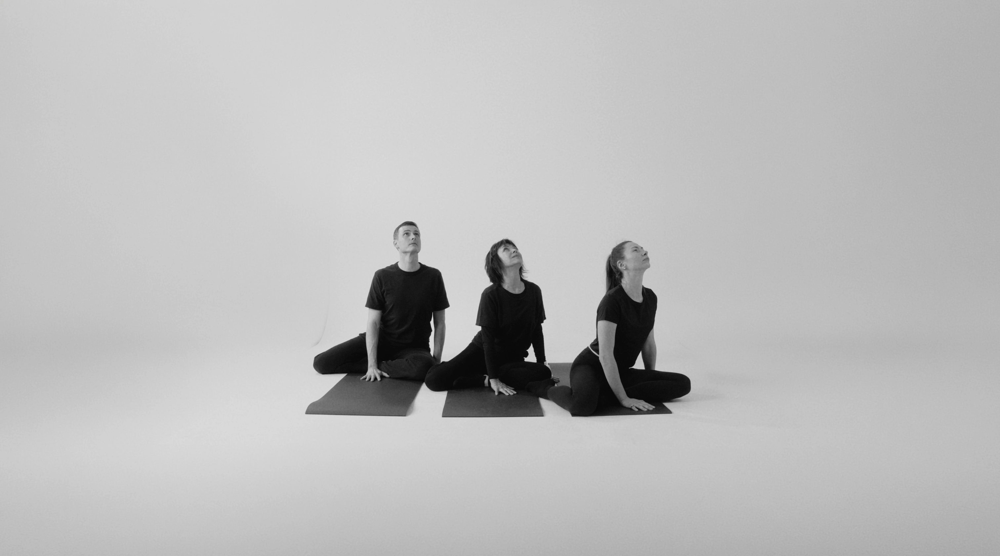
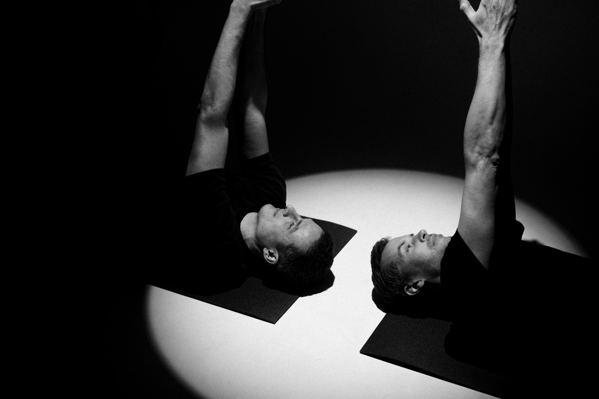

Více pohybu. Více radosti. Více života.
Protože tělo i mysl fungují nejlépe, když se dostanou do harmonie. Otevíráme možnosti zlepšení pohybu skrz vaše vlastní vedení. Lektor navádí pouze slovem, vše ostatní je na vás: váš komfort, tempo i provedení.
Volné lekce
a kurzy
Zkoumáme pohyb v komorních skupinách, abychom zaručili pozornost pro každého z vás. Podívejte se na aktuální volná místa v našem sále a rezervujte si své místo.
Načítáme aktuální termíny…
Metoda, která
přináší výsledky
Feldenkraisova metoda mění způsob, jakým komunikujete se svým vlastním tělem. V pomalém průběhu a v jemnosti v sobě rozvíjíte obrovský pohybový i duševní potenciál.
Uvolnění a obnova
FM zmírňuje stres a napětí, zklidňuje dech a mozek, zlepšuje náladu, celkovou pohodu a v neposlední řadě koncentraci. Ideální na přetížený nervový systém, pomáhá ubrat a lépe regenerovat.
Úleva od bolesti
S FM můžete pocítit úlevu od bolesti zad, ztuhlé šíje, přetížených beder a lopatek. Zlepšuje rozsah, pohyblivost, koordinaci, držení těla a celkové pohybové návyky.
Pohybová svoboda
Nahrazujeme zažité pohybové limity svobodným projevem. Zjistíte, že vaše tělo má na výběr mnohem více možností a variant pohybu, než jste si dosud mysleli.
Vnitřní harmonie
Propojujeme pohyb s vnitřním prožitkem a přítomností. Rozvíjíme kvalitu vnímání těla v pohybu s minimálním úsilím bez zbytečného přetížení pro dlouhodobou udržitelnost a plynulost.


Dva směry
pozornosti
Zpomalte pro návrat k přirozené lehkosti, nebo využijte vědomý pohyb pro optimalizaci profesionálního výkonu.
Návrat
k lehkosti
Jemná, klidná cesta zaměřená na vnímání dechu, zklidnění nervové soustavy a odstranění ztuhlosti. Vhodné pro ty, které trápí sedavé zaměstnání, občasné bolesti, nebo preferují pomalé cvičení bez tlaku na výkon.
Zjistit jak začít → Tělo jako profese Pro profíkyArts
& sports
Způsob, jak reorganizovat zaryté pohybové vzorce pro maximální efektivitu, lehkost a svobodu v pohybu. Určeno pro herce, tanečníky, hudebníky a sportovce, kteří se svým tělesným aparátem živí a vyžadují jeho přesnou koordinaci.
Zjistit jak začít →Co říkají
účastníci
Slova těch, kteří s Feldenkraisovou metodou už nějakou dobu zkoumají svůj pohyb.
Po letech bolesti zad jsem konečně našla cvičení, na které se těším. Tělo se mi uvolnilo a spím o poznání lépe.
Lekce jsou pomalé a jemné, ale výsledky přišly rychleji než z posilovny. Hlavně mi zmizelo napětí v ramenou.
Nevěřila jsem, že si na skupinové cvičení zvyknu. Tady nikdo nic nehodnotí a já se poprvé v životě hýbu ráda.
Chodím sem po náročných trénincích. Regeneruji rychleji a mnohem líp rozumím vlastnímu tělu.
Lenka
Schwarzová
„Jsem tanečnice a máma dvou dětí. Jsem fyzioterapeut, momentálně na cestě Feldenkraisovy metody, která mě absolutně oslovila.“
Pohyb je mou vášní a lidské tělo mě fascinuje odjakživa. Studium fyzioterapie mi dalo hluboké anatomické základy a vhled do pohybové patologie, ale až Feldenkraisova metoda mi zprostředkovala radost z pohybu ve svobodě bez hodnocení.
Vědět více o Lence →Spojte se
s námi
Zaujala vás Feldenkraisova metoda, potřebujete zkonzultovat své limity nebo se chcete doptat na volný termín? Vyplňte formulář a my se vám co nejdříve ozveme.
Nejčastější otázky
Jedná se o celosvětově uznávaný přístup k somatickému vzdělávání. Nezaměřuje se na posilování nebo mechanické opakování, ale na kultivaci uvědomění si vlastního těla skrze jemný, vědomý pohyb naváděný slovem lektora.
Ano, metoda je vhodná i pro lidi s chronickými bolestmi zad, kloubů či svalů. Pomáhá najít zažité kompenzační vzorce, které potíže udržují, a nabízí nové, efektivnější vzorce.
Vůbec ne. Lekce pro veřejnost jsou přístupné každému bez ohledu na věk, ohebnost či kondici.